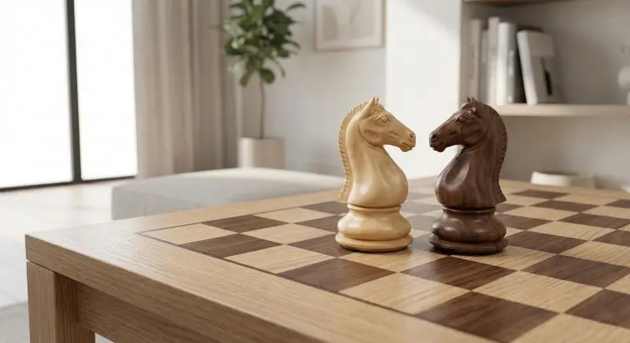

Lezioni di Scacchi a Roma (Appia, Prati, Parioli) e Online
Strategie avanzate e tattiche per giocatori di tutti i livelli, preparazione di aperture e tornei.
Approccio divertente e educativo per giovani menti brillanti dai 5 anni in su.
Incontri personali per un'esperienza di apprendimento immersiva.
Flessibilità e comodità, ovunque tu sia nel mondo.
Foto:@jcardenas_photo
Sei affascinato dagli scacchi e cerchi un istruttore di scacchi a Roma? Che tu sia un bambino o un adulto, ti aiuto a migliorare il tuo gioco nei quartieri Appia, Prati, Parioli, Marconi e Colli Albani e tutta Roma, oppure comodamente online.
Mi chiamo Kendry Salazar, sono un Arbitro Regionale e Giocatore Agonista del Circolo 4 Torri. Come istruttore di scacchi certificato FSI, metto la mia esperienza al servizio di chi vuole scalare le classifiche o imparare da zero con un metodo strutturato e professionale.
Un approccio ludico e coinvolgente disponibile a domicilio in zona Marconi, Colli Albani e tutta Roma.
Un percorso di crescita basato sulla mia esperienza al Circolo 4 Torri.
Fai la tua prossima mossa vincente: prenota ora a Roma o Online!
Contattami subito per la tua prima lezione gratuita. Sono pronto a guidarti nel fantastico mondo degli scacchi!
Pronto a migliorare il tuo gioco? Contattami per una consulenza gratuita!
Scacchilezioni@gmail.com +39.350.826.08.06
📍 Disponibile in zona: Appia, Prati, Parioli, Marconi, Colli Albani.